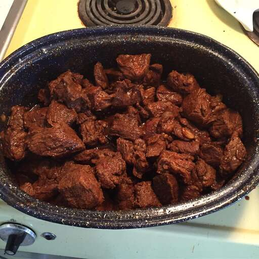

Goulash

Authentic Hungarian Goulash
Goulash is a traditional dish of Hungarian cuisine, although it is also popular in other Central
and Eastern European countries. It is a stew that is typically made with beef, onions, peppers, and
spices, with paprika being one of the most characteristic.
Recipe for four persons
- 2 tablespoons butter
- 2 large onions, diced
- 2 pounds flank steak
- 1/8 teaspoon caraway seed
- 1/4 teaspoon dried marjoram
- 1 clove garlic, minced
- 5 tablespoons paprika
- 2 cups water
- 4 large potatoes, peeled and cubed
- salt and pepper to taste
Steps
- Melt butter in a large soup pot over medium high heat. Saute onions until soft, then add beef and brown. Stir in caraway seed, marjoram, garlic and paprika. Pour water over all, lower heat to low and simmer for 2 1/2 hours.
- Add potatoes and cook until tender, another 45 minutes to 1 hour. Season with salt and pepper to taste and serve.